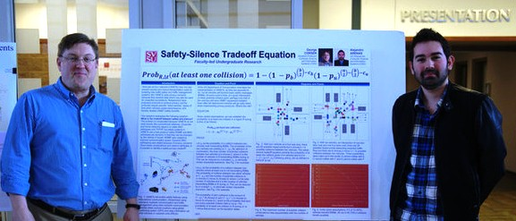
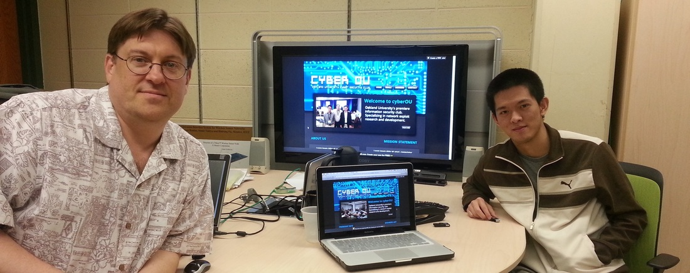
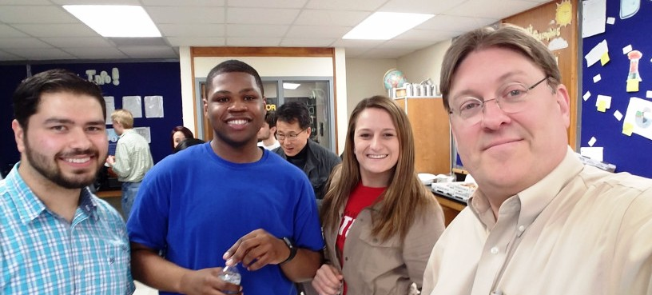

Fig. 1. George Corser and Alejandro Arenas
Alejandro Arenas. One of my first students at Saginaw Valley State University (SVSU) was quiet, reserved. In a chat during a break in class I learned he was a citizen of Venezuela. I discovered, besides facing barriers of language and culture, Alejandro faced a legal challenge: even after receiving a bachelor's degree he worried he may not be able to immigrate, to secure legal employment. Alejandro exhibited eagerness to take advantage of research opportunities, so I offered him a chance to work with me on an IEEE paper publication. During this collaboration, Alejandro thrived. When he was ready to graduate, I helped introduce Alejandro to an employer who eventually would sponsor his green card. This success helped Alejandro immigrate and get a job, helped me get a paper publication, and helped SVSU and its future students by proving that it is possible to get green card sponsorship even with only a bachelor's degree.

Fig. 2. George Corser and James Hsiao
James Hsiao. One of my students at Oakland University (OU) wanted to start a club based on the material I taught in my course on computer security. Cultural differences presented difficulties, but I helped James develop American-style leadership skills to fulfill his role as President of the club. This is what James wrote on my LinkedIn page:
George helped me develop leadership skills that will last me a lifetime. He is the ideal mentor because he is very knowledgeable in the field of Information Technology, a good listener and sounding board, non-interfering, nonjudgmental yet able to give constructive feedback, very honest and candid with people of varying opinions, able to network and find resources, and most of all willing/able to devote time to developing others.

Fig. 3. Google IgniteCS Team
Google IgniteCS. I helped SVSU win one of only two Google IgniteCS grants awarded in Michigan. The application required a diverse student team of computer science undergraduates. Computer science is notoriously homogeneous, especially with respect to gender. However, the IgniteCS leadership and I managed to recruit a diverse team of participants, including women, and today the president of our IgniteCS group is a woman. I wish I could point to a difficult hurdle that had to be overcome in order to achieve this goal, but I believe the solution was simple: just be welcoming.
Where possible, I participate in events and activities of cultural groups with which I am unfamiliar. For example, SVSU hosts a large contingent of students from Bangladesh. Prior to joining SVSU I had no special knowledge of Bangladeshi culture. I attended an event called Bangladesh night, which included food, dancing and other cultural activities. Later I invited several Bangladeshi students to my home where we cooked Bangladesh food. My house smelled like curry for over a week. I cannot prove it empirically, but I believe these extracurricular activities improved my communication in the classroom.
Students with learning disabilities can be especially challenging to teach. SVSU has a policy to allow special accommodations for students with disabilities. Accommodations can include individualized testing and peer note-taking. I have had several students whose disabilities have disturbed other students and sometimes even disrupted classes. It's important for us all to allow flexibility for disabled students, but we can never compromise education. I have had to talk to students and family members about inappropriate behavior, and I have had to take action. But I have never found it necessary to embarrass the offender publicly. Discipline can be enforced without humiliating anyone.
I look for the individuality of each student. I learn all my students names by the fourth week of class. I make a point to know something about each student that is different from everyone else in that class. Diverse backgrounds can present difficulties, but overcoming these difficulties yields rewards for students, for me, and for the university as a whole.